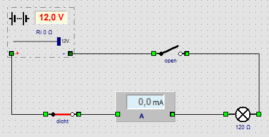

Parcours › Partir de l’énergie › Leçon 2 sur 5
Si vous fermez un robinet dans la fontaine de la leçon 1, l’eau s’arrête partout : pas seulement derrière le robinet, mais dans tout le tuyau. L’eau ne peut plus faire le tour. Peu importe que le robinet soit dans le tuyau vers la roue à aubes ou dans le tuyau de retour vers la pompe.
Un interrupteur fait la même chose avec le courant. Attention aux mots :
Un robinet, c’est justement l’inverse : un robinet ouvert laisse passer l’eau. C’est pourquoi, pour un interrupteur, on dit plutôt fermé et ouvert comme pour un pont-levis : un pont fermé, on peut le traverser.

Expliquez avec vos mots pourquoi la lampe reste éteinte quand seul l’interrupteur du bas est fermé. Il y a pourtant de la tension sur la lampe ? Pensez ensuite : ici la lampe doit briller quand l’interrupteur 1 et l’interrupteur 2 sont fermés. Où avez-vous déjà vu cela ?
Le courant ne peut pas revenir à la source : le circuit est ouvert. Sans chemin de retour, rien ne circule nulle part, même pas dans le morceau de fil qui est relié à la source, tout comme l’eau ne fait pas le tour avec un robinet fermé dans le tuyau de retour.
Deux interrupteurs l’un après l’autre (en série) fonctionnent comme un ET : la lampe ne brille que si l’un et l’autre sont fermés. C’est exactement ce que fait une porte ET. Une porte est donc un circuit qui laisse passer ou retient le courant.